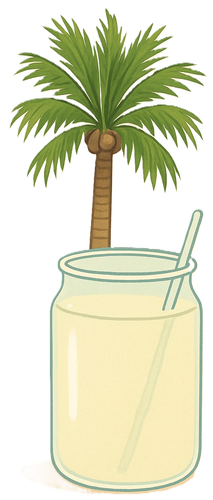

Padhaneer (also known as palm nectar or neera) is a traditional South Indian drink made from the fresh sap of the palmyra palm tree (Borassus flabellifer). It’s a natural, sweet, and refreshing beverage that’s been used for centuries, especially in Tamil Nadu and parts of Kerala. Rich in vitamins, minerals, and antioxidants, it helps with hydration and supports skin, teeth, and digestion. It’s low in calories and fat, acts as a natural coolant, and has anti-inflammatory and diuretic properties.
| Nutrient | Approx. Amount | Health Benefit | |
|---|---|---|---|
|  | Energy | 40–60 kcal | Provides quick natural energy |
| Carbohydrates | 10–15 g | Mainly natural sugars (sucrose, glucose, fructose) | |
| Protein | 0.2–0.4 g | Helps in cell repair and enzyme function | |
| Fat | 0 g | Fat-free natural drink | |
| Fiber | Trace | Supports digestion | |
| Vitamin B complex | Small amounts | Aids metabolism and nervous system | |
| Vitamin C | 2–5 mg | Boosts immunity and acts as an antioxidant | |
| Calcium | 20–30 mg | Strengthens bones and teeth | |
| Iron | 0.3–0.5 mg | Improves hemoglobin levels | |
| Potassium | 20–30 mg | Balances body fluids and controls blood pressure | |
| Sodium | 10–15 mg | Helps maintain electrolyte balance | |
| Zinc & Magnesium | Trace amounts | Supports immune and metabolic functions |
Rich in natural sugars like sucrose, it provides instant energy and is a great alternative to artificial energy drinks.
High in vitamins and minerals that help the body fight infections and diseases.
Potassium helps regulate blood pressure and supports heart health, reducing risk of heart disease.
Antioxidants like vitamin C and B2 help combat free radicals, potentially lowering cancer risk.
Dietary fiber and natural enzymes aid digestion and relieve constipation.
Contains calcium and magnesium essential for strong bones and preventing bone-related diseases.
Vitamin C and antioxidants support vision and help prevent eye disorders.
Rehydrates the body with essential electrolytes like potassium and sodium, similar to natural ORS.
Flushes out toxins and purifies blood due to its antioxidant properties.
In the Siddha system, palmyra roots are sun-dried and decocted into a remedy called panai karpam, used to treat jaundice, pterygium, and alopecia. Various parts of the palmyra are rich in nutrients and phytochemicals. Roots contain protein (8.54%) and fiber; fruit pulp is high in ascorbic acid and calcium; tuber powder is a source of fiber, iron, and phosphorus — essential for RBC synthesis, bone development, and detoxification.